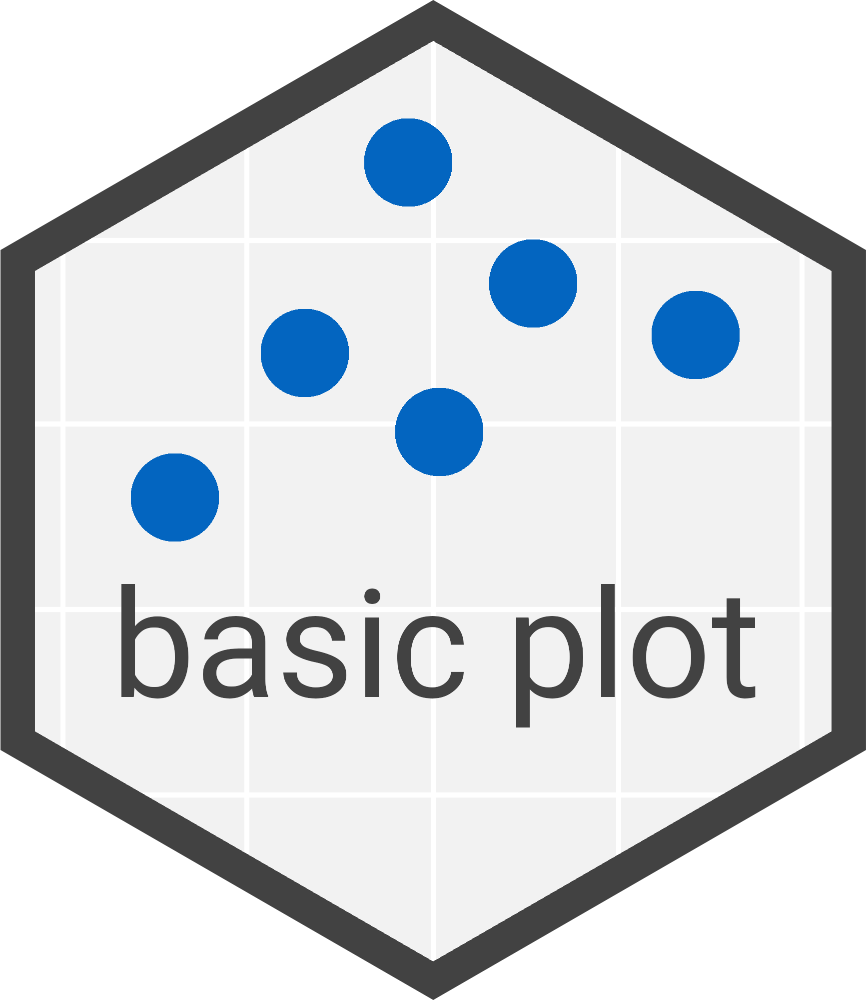
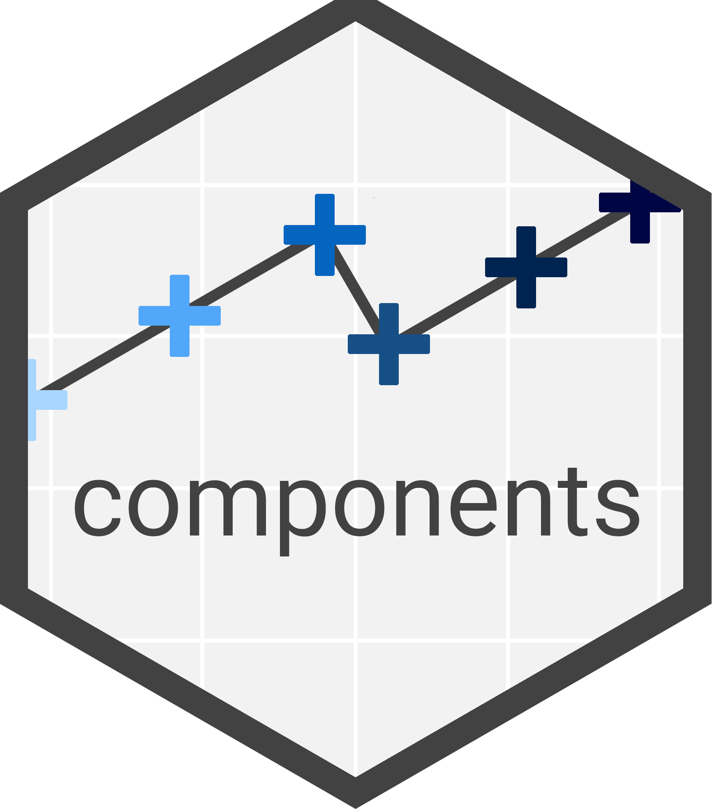
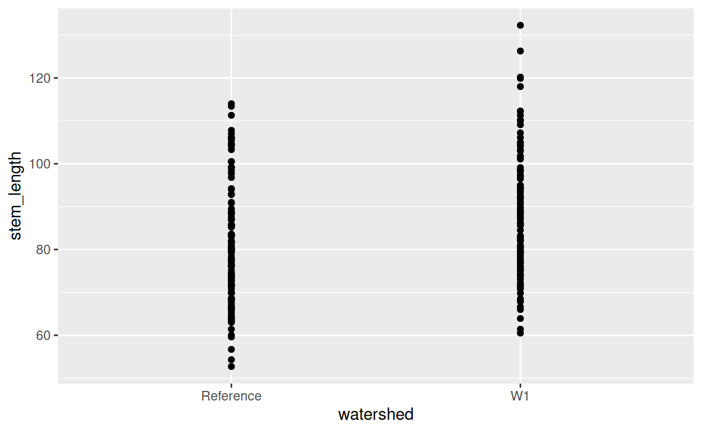
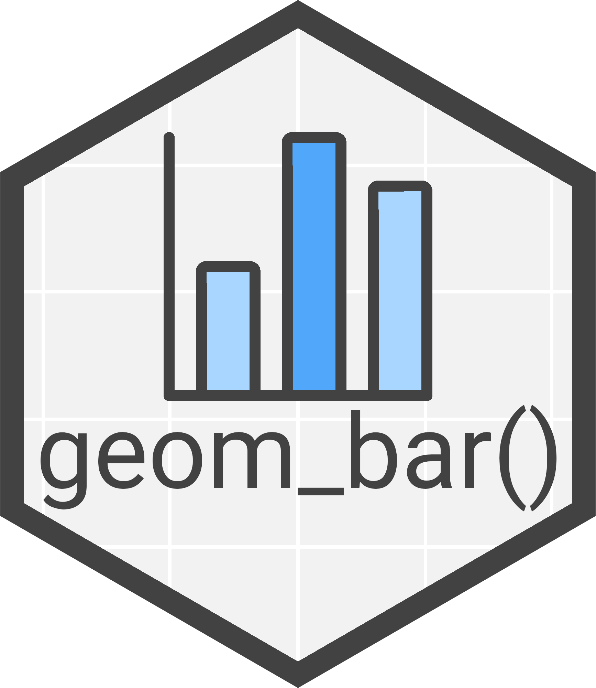
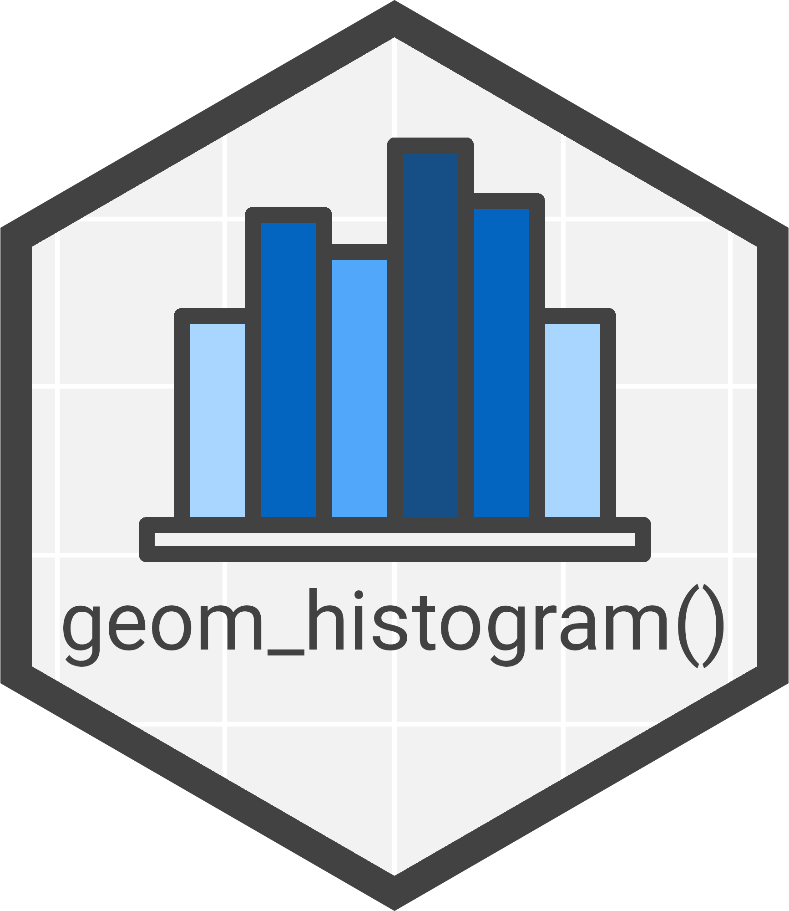
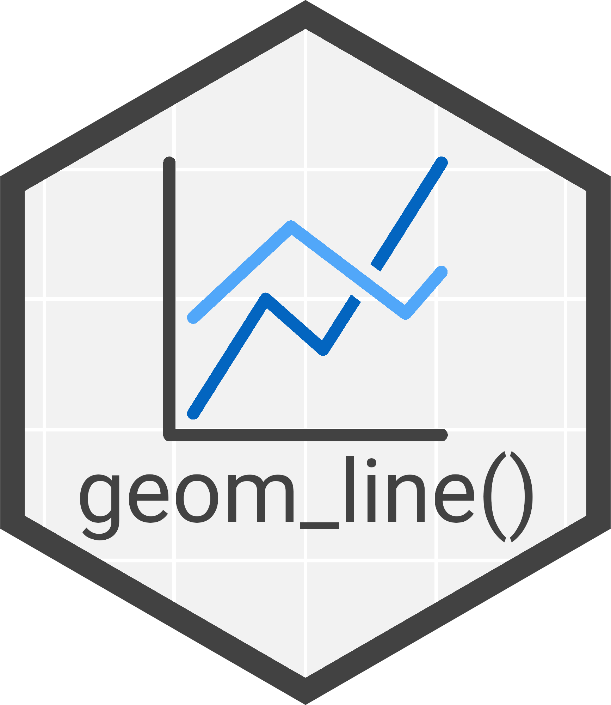
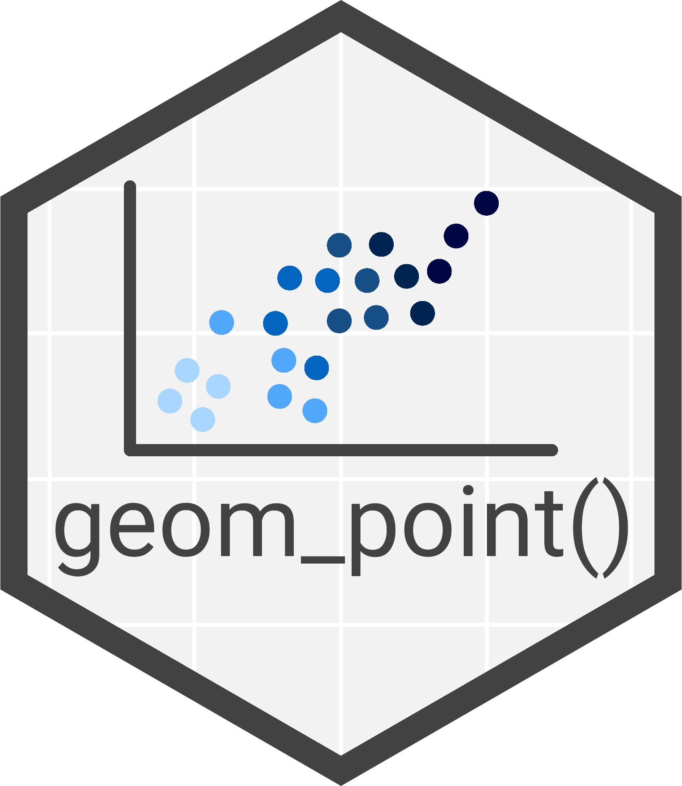
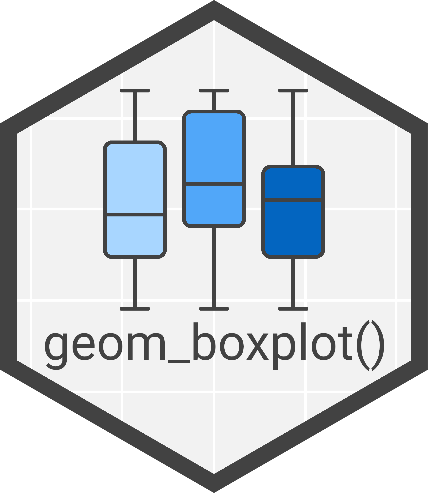
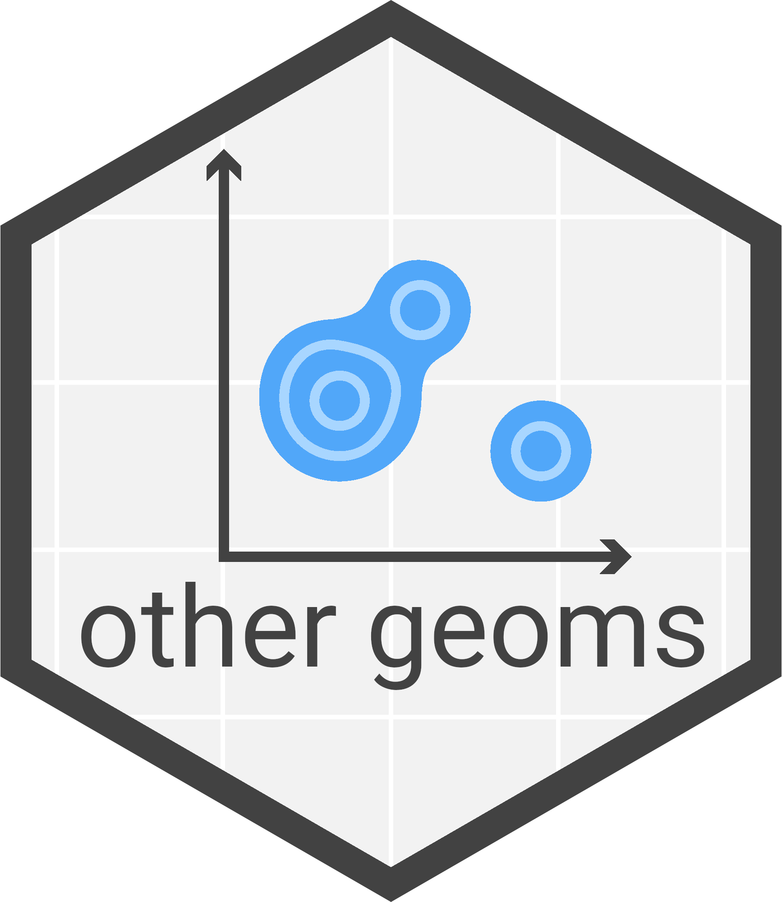

Anatomy


This first section will focus on the anatomy of a
ggplot2. This acts as an introduction to
ggplot2.
There is a lot of information in our tidyverse website so through these parts we will ask you to read the relevant part. Then we will reinforce that learning with MCQs (Multiple Choice Questions) and some coding challenges.
Basic plot
Read through the below web page:
Quiz & challenge
Attempt the below questions.
Complete the below code by:
- Adding the
Yearcolumn as the x aesthetic - Adding the
Populationcolumn as the y aesthetic - Adding the
ggplot2::geom_linelayer as the last component to create a line chart
world_pop_tbl |>
#Filter to only retain Australia rows
dplyr::filter(`Country/Territory` == "Australia") |>
#Convert Year column to numeric for plotting
dplyr::mutate(Year=as.numeric(Year)) |>
#ggplot object
ggplot2::ggplot(aes())world_pop_tbl |>
#Filter to only retain Australia rows
dplyr::filter(`Country/Territory` == "Australia") |>
#Convert Year column to numeric for plotting
dplyr::mutate(Year=as.numeric(Year)) |>
#ggplot object
ggplot2::ggplot(aes(x = Year, y = Population)) +
#Line component/layer
ggplot2::geom_line()Excellent! Now to look at the input data for
ggplot2.
Input data
Read through the below web page:
Quiz & challenge
Attempt the below questions.
Great! Next we’ll cover aesthetics.
Aesthetics
Read through the below web page:
Quiz & challenge
Attempt the below questions. All correct options must be chosen in the below questions.
Super! Now it is time to look at components.
Components
Read through the below web page:
Challenges
The below challenges will all involve adding components to a
ggplot object to add complexity.
Challenge 1
Create a scatter plot of leaf1area on the x axis and
leaf2area on the y axis for the tibble
hbrmaples.
You will need to add the component ggplot2::geom_pont()
to the below code.
Extra: Before creating the ggplot
object remove rows with NAs.
hbr_maples |>
ggplot2::ggplot(aes(x=leaf1area, y=leaf2area))hbr_maples |>
#Remove rows with NAs
tidyr::drop_na() |>
#Point plot of leaf1area (x) against leaf2area (y)
ggplot2::ggplot(aes(x=leaf1area, y=leaf2area)) +
ggplot2::geom_point()Challenge 2
Add a box plot component (ggplot2::geom_boxplot()) to
the below plot, ensuring the points are on top of the boxes.
Extra: Change geom_point() to
geom_jitter().
hbr_maples |>
#Remove rows with NAs
tidyr::drop_na() |>
#Ggplot of stem_length (y) against watershed (x)
ggplot2::ggplot(aes(x=watershed, y=stem_length)) +
ggplot2::geom_point()
hbr_maples |>
#Remove rows with NAs
tidyr::drop_na() |>
#Ggplot of stem_length (y) against watershed (x)
ggplot2::ggplot(aes(x=watershed, y=stem_length)) +
#Boxplot
ggplot2::geom_boxplot() +
#Jitter points (on top of box plots)
ggplot2::geom_jitter()Brilliant! That’s the introduction to ggplot2 done its
time to look at various layers.
Layers






Layers are vital for ggplot2, without them your data
will not be visualised. There are many different types all with
strengths and weaknesses. This tutorial will focus on how to use them
not the when and whys.
Exercises
This following 6 sections are challenges. You will need to reference our tidyverse website to find the correct functions and their usage.
The challenges will be creating:
- A Bar chart with
geom_bar() - A Histogram with
geom_histogram() - A Line chart with
geom_line() - A Scatter plot with
geom_point() - A Box plot with
geom_boxplot() - A Hexagonal 2D bin count heatmap with
geom_hex()
Additionally, each challenges will have an extra
optional task. These are optional and you will
need to reference the web pages in the ggplot2
customisation section if you want to complete them.
Bar chart
Create a bar chart with mushroom_tbl showing the
relative proportions of the different cap shapes across the different
cap colors.
In other words:
- Use the tibble
mushroom_tblto create aggplotobject - Use
cap_coloras the x aesthetic - Use
cap_shapeas the fill aesthetic - Use
geom_bar()as theggplotlayer - Set the option
position=ingeom_bar()so it displays relative proportions
Code
mushroom_tblmushroom_tbl |>
ggplot2::ggplot(aes(x=cap_color, fill=cap_shape)) +
#Relative proportion bar chart
ggplot2::geom_bar(position="fill")Histogram
Create a histogram with and_vertebrates of weight counts
with bin sizes of 5. Ensure NA values in the
weight_g column are not included.
In other words:
- Use the tibble
and_vertebratesto create aggplotobject - Drop rows with
NAs in theweight_gcolumn (requires atidyrfunction) - Use
weight_gas the x aesthetic - Use
geom_histogram()as theggplotlayer - Set the option
binwidth=ingeom_histogram()to 5
Tidyverse
geom_histogram() page
Code
and_vertebratesand_vertebrates |>
#Remove rows with NAs in weight_g column
tidyr::drop_na(weight_g) |>
#ggplot histogram of weight counts
ggplot2::ggplot(aes(x=weight_g)) +
#Bin width set to 5
ggplot2::geom_histogram(binwidth=5)Line chart
Create a line chart with living_planet_tbl plotting the
Average Living Planet Index (y) against the year (x) with the lines
coloured by Region.
In other words:
- Use the tibble
living_planet_tblto create aggplotobject - Use
Yearas the x aesthetic - Use
Average Indexas the fill aesthetic- Remeber to use backticks (
`) when using column names with spaces
- Remeber to use backticks (
- Use
Regionad the color aesthetic - Use
geom_line()as theggplotlayer
Code
living_planet_tblliving_planet_tbl |>
#ggplot line chart of average index (y) against Year (x) split by Region
ggplot(aes(x=Year, y=`Average Index`, colour=Region)) +
geom_line()Scatter plot
Create a scatter pot with crab_age_pred_tbl plotting
height (y) against length (x) with the points coloured by sex.
In other words:
- Use the tibble
crab_age_pred_tblto create aggplotobject - Use
Lengthas the x aesthetic - Use
Heightas the y aesthetic - Use
Sexas the color aesthetic - Use
geom_point()as theggplotlayer
Code
crab_age_pred_tblcrab_age_pred_tbl |>
#ggplot point chart of Height (y) against Length (x) coloured by sex
ggplot2::ggplot(aes(x=Length, y=Height, color=Sex)) +
ggplot2::geom_point()Boxplot
Create a flipped boxplot with amphibian_div_tbl plotting
boxes of body size across families.
In other words:
- Use the tibble
amphibian_div_tblto create aggplotobject - Use
Body_size_mmas the x aesthetic - Use
Familyas the y aesthetic - Use
geom_boxplot()as theggplotlayer
Code
amphibian_div_tblamphibian_div_tbl |>
#ggplot flipped boxplot of Body size across families
ggplot2::ggplot(aes(x=Body_size_mm,y=Family)) +
ggplot2::geom_boxplot()Building complexity
A great advantage of ggplot2 is the ability to add
components and options to gradually increase the complexity of
plots.
Challenges
To finish off this tutorial you will use all you have learnt to improve the plots you created when learning the different layers.
Each challenge will have the final code for the previous plots you
created. You will need to follow the instructions to edit and add
components to the code. Additionally, you will need to pipe the data
into dplyr and tidyr functions before the
ggplot creation for some of the challenges.
This tutorial aims to make you familiar with tidyverse
and our Tidyverse
website. Please use our siet as a reference and feel free to copy,
paste, and edit the code from it.
Bar chart
Change the colours used for the fill aesthetic to the Wong palette shown in the Colour scales page.
mushroom_tbl |>
ggplot2::ggplot(aes(x=cap_color, fill=cap_shape)) +
#Relative proportion bar chart
ggplot2::geom_bar(position="fill")#Wong palette
wong_pal <- c("#e69f00","#56b4e9","#009e73","#f0e442",
"#0072b2","#d55e00","#cc79a7","#000000")
##ggplot
mushroom_tbl |>
ggplot2::ggplot(aes(x=cap_color, fill=cap_shape)) +
#Relative proportion bar chart
ggplot2::geom_bar(position="fill") +
#Wong palette for fill
ggplot2::scale_fill_manual(values = wong_pal)Histogram
Carry out the following:
- Set the color aesthetic to
species - Change the layer from a histogram to a frequency polygon
- Change the x label to “Weight (grams)”
and_vertebrates |>
#Remove rows with NAs in weight_g column
tidyr::drop_na(weight_g) |>
#ggplot histogram of weight counts
ggplot2::ggplot(aes(x=weight_g)) +
#Bin width set to 5
ggplot2::geom_histogram(binwidth=5)and_vertebrates |>
#Remove rows with NAs in weight_g column
tidyr::drop_na(weight_g) |>
#ggplot histogram of weight counts
ggplot2::ggplot(aes(x=weight_g, color=species)) +
#Bin width set to 5
ggplot2::geom_freqpoly(binwidth=5) +
#X label set
ggplot2::labs(x = "Weight (grams)")Line chart
Carry out the following:
- Change the layer from a normal line chart to a steps line chart
- Set the legend text size to 8
- Set the legend position to the bottom of the plot
living_planet_tbl |>
#ggplot line chart of average index (y) against Year (x) split by Region
ggplot(aes(x=Year, y=`Average Index`, colour=Region)) +
geom_line()living_planet_tbl |>
#ggplot step chart of average index (y) against Year (x) split by Region
ggplot(aes(x=Year, y=`Average Index`, colour=Region)) +
geom_step() +
#Add a plot title
labs(title="Living Planet Index") +
#Set size of legend text and set position to bottom of plot
theme(legend.text = ggplot2::element_text(size=8),
legend.position="bottom")Scatter plot
Carry out the following:
- Remove rows where
Heightis equal to 0 - Change the color aesthetic to
Age - Facet grid the plot by rows using the
Sexvariable - Scale transform the y axis by log10
crab_age_pred_tbl |>
ggplot2::ggplot(aes(x=Length, y=Height, color=Sex)) +
ggplot2::geom_point()crab_age_pred_tbl |>
#Remove rows/observations where Height equals 0
#To avoid warnings from the scale transformation
dplyr::filter(Height != 0) |>
#ggplot point chart of Height (y) against Length (x) coloured by sex
ggplot2::ggplot(aes(x=Length, y=Height, color=Age)) +
ggplot2::geom_point() +
#Facet grid by rows using the Sex variable
ggplot2::facet_grid(rows=dplyr::vars(Sex)) +
#Scale the y axis by log10
ggplot2::scale_y_log10()Boxplot
Carry out the following:
- Drop rows where
iucn_2catisNA - Set
Familyto the x aesthetic - Set
Body_size_mmto the y aesthetic - Discard outliers from the boxplot
- You will need to look at the official
tidyverse
geom_boxplot()page
- You will need to look at the official
tidyverse
- Add the
geom_jitter()layer and colour these points byiucn_2cat. - Make the x axis labels dodge each
- Remove rows where
Heightis equal to 0 - Change the color aesthetic to
Age - Facet
grid the plot by rows using the
Sexvariable - Scale
transform the y axis by log10, setting 3 rows for dodging
- See our
tidyverseGuides page
- See our
amphibian_div_tbl |>
ggplot2::ggplot(aes(y=Family,x=Body_size_mm)) +
ggplot2::geom_boxplot()amphibian_div_tbl |>
#Drop rows where iucn_2cat is NA
tidyr::drop_na(iucn_2cat) |>
#ggplot boxplot of Body size acorss families
ggplot2::ggplot(aes(x=Family,y=Body_size_mm)) +
#Boxplot ensuring outliers are removed
ggplot2::geom_boxplot(outliers=FALSE) +
#Jitter points coloured by iucn_2cat
ggplot2::geom_jitter(aes(color=iucn_2cat)) +
#Set 3 rows for x axis label dodging
ggplot2::guides(x = ggplot2::guide_axis(n.dodge = 3))